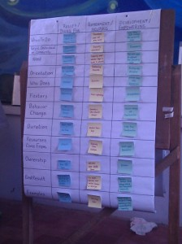

Posts Tagged ‘fb’
Joomla’s True Merit
Two weeks ago, I was in Kerkrade, Netherlands at J and Beyond giving a lightning talk about Joomla’s True Merit. Here’s the video of that talk, along with the text I originally prepared. My talk is the first one in the video (after Brian introduces me) and the other Lightning Talks follow. Enjoy!
A huge thank you goes out to Jeremy Wilken for organizing the video recordings at JAB and uploading them!
Here’s a direct link to Vimeo if the video doesn’t pull through.
I started off this year in the Philippines doing a missions internship. I packed all of my things into my car, parked it at my parents house, flew halfway around the world, then spent ten weeks working with missionaries. And I loved it. It was a chance to step away from writing code and spend time living in another culture.
And while I was there, I learned something very important about missionary work. You don’t just show up in a country and start a business, school, hospital, orphanage, or church. You meet people, build relationships, and learn from the people around you. You learn how business is done, you learn the local language, and you learn cultural expectations.
Only then do you work alongside nationals. And as you work, you train people. You train people not only until they can run something on their own, but until they start training others. Then you step back and let them own the work.
In contrast, when you run in and do everything on your own, your efforts become merely a means to an end. You create a dependency on yourself. Nationals are robbed of their dignity, believing they can’t do the work themselves. When you’re gone, the work you’ve done is over and nobody continues it.
There’s a direct correlation to the way missionaries must work and the way we approach volunteering for the Joomla project. If we contribute code to Joomla without learning from others, we won’t know what the expectations are. We won’t know what problems others are facing and we won’t know how to direct our efforts.
Worse, if we don’t put an effort into teaching, we’ll eventually become tired and burnt out. Other people in the community will become dependent on us and will never learn how to contribute to Joomla themselves. And when we’re gone, Joomla will fade away.
But if we approach the project ready to learn from each other and train each other, we’ll never have a shortage of people who are ready to maintain Joomla. And we’ll be accomplishing something far greater than simply maintaining Joomla: we’ll be launching new programmers, new designers, new webmasters, and new trainers. And people won’t just learn about Joomla, they’ll learn all of the tools and technologies that go into it.
We’re not here to build perfect software. There will be bugs in the tracker when we release 1.7, 1.8, 2.0, and every version of Joomla that will ever be released. There will always be features missing from the core, and there will always be old parts to do away with. But if we learn from each other, we can stop bugs before they happen. And if we train each other, there will be people ready to fix the ones that do crop up.
Twenty years from now, we won’t care about the way we implemented the Model-View-Controller design pattern in the Joomla Framework. We won’t care about how Joomla was licensed, and we certainly won’t care about Joomla vs. Drupal vs. WordPress. But we will care about the people we worked with, trained, and learned from.
Because the relationships we build through learning and teaching are Joomla’s True Merit.
The Missions Internship, premiering 8/7 Central
I’ve been in the United States for a couple of weeks now. The jet lag is over. A considerable amount of Mexican food has been consumed. Pennsylvania is in the middle of the “not quite winter, not quite spring” season. Facebook shows what all of my Filipino friends are doing, but it’s not the same as being there. And I’ve spent time reflecting on the internship as a whole.
Then one day, it hit me: this would have made the perfect reality TV series. We had team tasks every week, a host, a wide mix of people, and an unfamiliar environment. You could have rolled the cameras, added a few “honesty cam” interviews, and tied it all together with strategically placed music. Then we could have used royalties from the show to fund all of the missionaries!
Thankfully, the internship was not a reality TV series. Nobody was voted off Panay Island and nobody went home until the end. No one walked around with an attitude of “immunity.” Dave was not ranking us and deciding who would be eliminated next.
The entire point of the internship was for us to grow and learn by doing things as a team. You can’t effectively do all of those things when you try to perform, show off, and make yourself noticed. You have to listen to everyone and think of them as better than yourself. And you have to rely on God’s power working through you, not your own talents and strengths.
So while nobody made a reality series based on our internship, there were cameras around. Nomil not only made a movie out of our footage, he also made a trailer!
So, what’s next on the agenda? I’m never too far from the Joomla! community, so I’m returning to J! and Beyond for 2011. Then after three days of friends and geekery, I’m taking a side trip to pay a long overdue visit to Landon and Lacey in Kosovo!
It takes time
Confession: when I started the Timothy Internship Program, I had an agenda. My idea was to pack up my laptop, move to the Philippines, start a web design business, and mentor Filipinos to be local programmers instead of Overseas Filipino Workers. I was really excited about doing this, because I thought it would be fun, different, revolutionary, and the ultimate expression of the talents God has given me.
The impact would be huge and rapid. It would take off like wildfire, pump jet fuel into Iloilo City’s economy, keep hundreds of families together, and cause a massive cultural shift in this generation’s mindset. People would reject despair and corruption, while embracing God’s provision in their lives.
When I arrived in Iloilo, I tried to explain everything. The missionaries patiently listened to my ramble of ideas, then politely asked logistical questions. Although they were supportive of helping me explore the concept, I began to see holes. Then culture shock set in. I experienced the extra effort adjustment takes, let alone adjusting and running a business. I also began to question what a successful implementation of my ideas would look like. My passion for this vision of “mentorship through web design” waned.
And there was a more fundamental problem: this was my vision, not God’s.
So I sat back and let the internship take its course. We helped with children’s ministries, medical outreaches, a conference, and taught in a Bible school. Throughout all of these experiences, there was a common theme: relationships. We did not simply show up and start doing ministry. We stood on relationships built by missionaries already on the field.
Missionaries establish these relationships not just for friendship, but as a crucial piece of implementing God’s design for discipleship. Missionaries do not exist to broadcast the Gospel at the top of their lungs and leave. They exist to pour their lives into people who are ready to own the Gospel. Once ownership of the Gospel is taken, missionaries step back and watch the church grow. This isn’t something you can do in two weeks, or even six months.
Long-term visions cannot be realized through short-term plans. You cannot run in with a box of tools, leave it on someone’s doorstep, and hope a church is built. Likewise, you cannot run in unannounced, establish a ministry through your own efforts, then expect someone else to take over. It takes relationships, patience, and a vision that’s worth the long haul.
It takes time.
Serving, surveying, teaching, and modeling
Upon arriving in Iloilo, Rodney constantly talked about the Frontline Shepard’s Conference he was helping organize for local pastors. As it turned out, our week on Servant Leadership involved helping Rodney run the conference. The Sunday before opening day, we met at the auditorium and began the process of last minute preparations.
Although the conferences I’ve previously helped with were for programmers, this one still had familiar themes. Unlike writing software, an event happens at a specific place, at a specific time. You don’t have a chance to do things over or to fix things after the fact. Because of this, you’re always doing three dozen things at the last minute. For instance, Rodney handed me a box of pens and said “take the barcode stickers off all these pens. I’m not asking you to do this just to give you menial work…” Then I finished “…it just needs to be done!” Oh Rodney, I know the drill…

Once all of the last minute pen.. er, preparations were in place, we spent the next three days helping run the conference. Registrations were paid, people were directed, pastors were encouraged, and God’s call to missions was preached loudly and clearly. We also got to sit in on some of the sessions and meet the speakers.

At the end of the three days, we were tired and took a nap.
The week after, we again worked with Nate and Abegail and Jesus Is Hope And Light Church. This time, we surveyed a community near the Calajunan dump site called So-oc. Much like San Isidro, So-oc was a smaller community until 10,000 people were relocated there from other parts of Ilolio City. Most of the roads of So-oc are dirt and many homes are suspended over swampy land by bamboo poles.
Armed with umbrellas, sunscreen, and paper surveys on clipboards, we ventured into the community. We set out in paris, with one Ilonggo speaker and one English speaker. The survey covered some vital questions about age, income, occupation, nutrition, and water. Rain poured both of the days we were there, turning the dirt roads of So-oc into a wet, muddy mess. The number of households we were able to survey dwindled.
Honestly, I felt mostly useless while during the surveys. I still speak Ilonggo “gamay lang,” and couldn’t understand most of the responses. At most, I was able to pray silently and make some occasional small talk. However, as I would later learn, the last thing the survey was about was my ability to communicate with the locals. Even the survey itself was less about the information being collected, vital as it was.

We gathered our completed surveys together and handed them over to Nomil and Valerie. They compiled the survey results in Iloilo, while the rest of us boarded a quick flight over to Davao. While there, we took turns teaching courses at Calvary Bible Institute. When I initially learned we would be teaching at a Bible school, I was very apprehensive. My formal Bible training consists of a college course in Hermeneutics and little else. But when we took gifting assessments during the first week of the internship, mine came up as Teacher.
Then Dave announced that I would be teaching children’s ministry. What a relief to hear I would be teaching something I know! After reading the curriculum, making some notes, and adding in some parts from experience, I arrived on Tuesday morning ready to teach. Three hours flew by before I knew it and we covered the majority of the material. I thoroughly enjoyed teaching that day and want to explore doing more of it in the future!

Art teaches on Christian Families
When we got back from Davao, we reunited with Nomil and Valerie. They prepared a presentation based on the So-oc survey data, then we added suggestions based on what we saw. We the gave the presentation to the pastor of the church, as well as several missionaries. While the pastor appreciated our suggestions, she also mentioned that our survey caused a not entirely unexpected side effect.
Church members from So-oc noticed our survey efforts, then took it upon themselves to do their own survey in a section we hadn’t even reached. Through their survey, they were able to invite more people to the church who were previously unaware of it. Many families currently taking three separate jeepney rides to church will soon start walking to Jesus Is Hope and Light Church.
My Ilonggo proficiency didn’t have any bearing on the success of this survey. The number of people we surveyed also wasn’t important. Many of the questions themselves weren’t absolutely crucial information. And I didn’t even get a chance to use my training in statistics to compile the results. The important thing is that we did the survey, which encouraged the local church to take over.
There is no way I can sustain a church planting movement through my individual efforts. Nor can I eliminate poverty by simply feeding and clothing the poor. But I can model what needs to be done. I can motivate other people through my actions. And I can offer advice based on my experience and observations.
However, once we model, it’s absolutely crucial to step back and let the local church continue. When we don’t, an unsustainable dependency is created that stunts the local church’s growth.

Modeling is something we’ve learned throughout the internship. Although we’ve learned cultural immersion, children’s ministry, Community Health Evangelism, servant leadership, community development surveys, and teaching, they are not avenues for building our own ministries. They are tools to help us build the ministries of local churches.
Having practiced all of these methods, we’re coming to the end of the internship. In this last week, we will lay out a vision for our future work as missionaries. While I’m sad to be leaving Iloilo so soon, I know that God will always lead me to the right place at the right time.
Children’s Ministry and Community Health Evangelism
Time has flown by: I’m now in the middle of Week 6 of the Timothy Internship Program in Iloilo City! And I’m still learning by doing: not doing for the sake of doing.
Nate and Abegail spent a week teaching us from their experience in running children’s ministry. Nate started off by presenting some mind-boggling statistics: 1/3 of the world’s population is under 18 years old, 400 million children in the world are street kids, and less than 15% of all missions spending goes towards children.
Then Abegail walked us through the “LEARN” method for developing children’s ministries. LEARN stands for learner based, experiential, applicable, relational, and narrowly focused. She showed how to use LEARN in breaking down a lesson for the short attention span of kids. We also practiced using puppets, games, and recurring characters to complement lessons.
These skills came in handy for organizing several Kidz Clubs. A Kidz Club lasts for a couple of hours involving songs, games, lessons, memory verses, and some absolutely essential time to run around and burn off extra energy! While Nate and Abegail provided us with the themes for the lessons, we picked the songs, wrote stories, and came up with games. We ran Kidz Club at the Sonshine Center in Iloilo City, as well as the church plant that Nate and Abegail are starting at Calajunan.
The process of developing children’s ministry surprised me. It turned out to be much easier than I imagined. For all of the energy you can put into learning a prewritten curriculum, it doesn’t take much more effort to create your own. However, it does require more planning: you have to pick the topics and develop the lessons you want to teach. But in the end, you have a ministry you own and can hand-craft to the needs of the children you’re serving. Considering that 80% of people make a decision to follow Christ before age 13, I think the time investment in extra planning is well worth it.
With some children’s ministry experience under our belts, we were handed off to Mike and Jude Kelly for a week of training in Community Health Evangelism (CHE). The CHE program is designed to help communities learn and teach Biblical health principles. Mike and Jude have been working with members of the San Isidro relocation community to implement a CHE program. In 2008, San Isidro became home to several hundred people displaced by Typhoon Frank. Most of the families there are still rebuilding their lives.
At the beginning of the internship, we got a personal introduction to the San Isidro community through a dental outreach. While the outreach only lasted a few hours, months of preparations and relationship building went into it before we even arrived. The children at this outreach received a dental checkup, as well as a hands on lesson in brushing their teeth.

This dental outreach was a great example of why CHE is so important. If they wanted to do a quick outreach, Mike and Jude could have grabbed a local dentist and a few friends, showed up on a Saturday, then flown back to the United States. But they wouldn’t have built any relationships and the community wouldn’t be equipped to manage future health problems. Instead, the Kellys have invested time in befriending, recruiting, and training community members to teach health topics. This way, the health lessons will keep spreading and the Kellys can begin the process again with another community.
Right now, Jude is training us for a second week, covering First Aid. It will come in handy, as we are organizing the annual medical outreach at the Sonshine Center. So in the meantime, I have some signs to hang up!

This hamburger is enormous, and has nothing to do with children's ministry or CHE.
Timothy Internship Program
By popular demand, here’s a blog post about what I’m doing in the Philippines.
Actually, you should probably go read Dave’s post about what I’m doing in the Philippines; I couldn’t have put it any better. If you’re too lazy to click over, I’ll summarize for you here. Although I’m singing, dancing, preaching, cooking, and showing kids how to brush their teeth, these ministries are not the reason I’m now here with five other interns. The reason I’m here is to learn by doing.
Like I said in November, there are amazing people here spreading the Gospel by all means. They don’t just preach the Word of God, they model discipleship through their actions. While I have a ton of ideas percolating about things I could do after these ten weeks are up, my objective for this trip is to learn. And I’m learning by doing things alongside the people who are already here.
So what I have I learned so far? Well, the Ilonggo* language for starters. Although my level right now is still at “please,” “thanks,” “my name is Joe,” “when’s lunch,” “here’s my fare,” “stop here,” and “where’s the bathroom?,” I’ve had fun picking it up and want to learn more. More importantly though, I got experience in LAMP (Language Acquisition Made Practical). Instead of trying to about a language, you learn a language by talking to people who speak it.

We had several native speakers of Ilonggo to help us with this method. Each morning, we spent a few hours going over basic phrases and conversation starters. In the afternoon, we headed out to the streets to start up conversations with people. Although a lot of people wanted to speak English when we stopped by, we managed to find people who were gracious and patient enough to let me try my broken Ilonggo! My LAMP helper Leo is in the picture below, along with his mom Aida on the left:
I also spent a week at Leo and Aida’s home and learned about their family. They served me loads of delicious Filipino food! Leo showed me around his neighborhood and we struck up yet more Ilonggo conversations along the way.
Aside from learning the language, we’re also learning how to be ready for preaching and ministry whenever the opportunity arises. We stopped by the young professionals HUB group at Full Gospel Church and I gave a message about how God arranges our careers. This was the first time I’ve written a Bible study. It wasn’t as difficult as I thought it would be, but God is still teaching me how to prepare.
Aside from learning, we’re also observing. Nate and Abegail Shuck, who I met a little over a year ago, have been focusing their efforts in the Calajunan area. As unbelievable as it may sound, there are people here who live inside of a giant trash dump. A mountain of styrofoam overlooks makeshift homes. Both children and adults mine the dump for recyclables they can turn in for money. (However, there’s a secret about this place we discovered when I visited with my church in 2009.)
Since then, Nate and Abegail have worked with people in the area to establish a church. This past Sunday, we had a chance to visit the church site. When Nate opened the gate, I stood there speechless. Nate had been talking about this for over a year, and there it was in progress:
This church is not just a place where people will worship God: it is an urban farm where livestock will be raised and organic produce will be grown. The produce will not only provide food for the people growing it, but will also be sold in local markets so that the church is self-sustaining.

{kind=link}
{kind=link}
{kind=link}
{kind=link}
{kind=link}
{kind=link}
{kind=link}
This church is far enough away from the dump to feel like another place, but it’s still within reasonable walking distance. They’re planning on screening in the sanctuary, while surrounding it with plants so that it will feel like having church in a garden. Some smaller huts are also being built where kids can have Sunday School and catch some cool breezes in the shade.
And this week, Nate and Abegail will also be leading us through classes on children’s ministry. As they’ve described it, we’ll be doing “class” in the mornings and “lab” in the afternoons. So, it’s off to class for me now!

Nomil Adorada introduces us at Savannah Christian Fellowship
* Or is it Hiligaynon? At least I’m certain it isn’t Tagalog.
You know you’ve been around Washington DC too long when…
Last week, a bunch of people got kicked out of Washington. While those ones were removed against their wishes, I’m going to be leaving willingly in January. I’ve learned a lot through 5.5 years here, but it’s time to move on.
However, I’m doing more than just leaving DC: barring unforseen circumstances, I’m also leaving the country. Since there’s currently nothing preventing me from doing so, I’m taking the opportunity now. Last year, I visited Iloilo City in the Philippines with my church and met people doing amazing things! I’ve decided to return to Iloilo City and spend ten weeks doing a missions internship, after which I will be considering different options. I’d ultimately like to continue programming and writing, while training and mentoring other programmers. But first I’m going step back, spend ten weeks, and see where God leads it.
With that in mind, I feel it’s appropriate to reflect on signs that you’ve worn your welcome in Washington. So without further ado, you know you’ve been around Washington DC too long when…
- You’ve been invited to multiple instances of the “Take Back America Conference” in different years, hosted by different parties.
- Twenty minutes is a quick drive to a friend’s house.
- You are completely unimpressed by rallies “filling the National Mall” that don’t make it past 7th Street.
- You watch movies set in DC and can always point out scenes featuring places where you’ve worked.
- You no longer ride Metro.
- Before voting, you consider a politician’s stance on DC statehood.
- You think $1,200 a month is a pretty good deal on an apartment.
- You don’t think twice when you bump into a senator or representative.
TNR Cafe
Most Chinese food restaurants in the DC area come in two varieties: scary or authentic.
For whatever reason, the cheaper places around here seem to go overboard in catering to American tastes: some even offer french fries and hamburgers in addition to the ever-sugary General Tso’s Chicken. Needless to say, when I receive flyers for these places, they go directly into the garbage.
Much more authentic places are on the other end of the scale. These run the gamut from weird hours, to cash only, to out of the way, to gruff service, to non descriptive menus, to any combination of the preceding. Going to one can be rewarding, but it can take some planning.
Then there’s Tea Noodles Rice Cafe. About four years ago, I noticed this place opening in Arlington and decided to pay a visit. At the time, they had your standard Americanized Chinese menu, with two notable additions: bubble tea and meal soups. The meal soups were enormous; I was never able to finish the whole thing. While most of the rest of the menu was made up of dishes you could get at ten thousand places from here to Los Angeles, it was all served in a clean, friendly restaurant close to where I lived.
About a year ago, they redid the soups and added authentic Chinese meals. I’ve tried the meals a couple of times now; they’re delicious! Unlike the standard sugar-saturated, meat-and-carbohydrate heavy fare, these dishes feel a little bit more like an everyday meal that someone whipped up for a family. While I have no way of verifying the authenticity short of a trip to China, these dishes are at least a step away from the tired takeout everyone knows. So far, the beef with fresh hot pepper, taiwanese style crispy chicken breast, stir fried chinese sausage with eggs, and tomato egg drop soup are winners.
If I had a few wishes to spend on this place, they would be to drop the overtly americanized food and to get some marketing help. TNR Cafe is located in a neighborhood that’s able to support something unique (young adults and office workers), but the owners are playing too safely. I think the americanized food is distracting them from further developing the authentic menu. They’re also underselling their bubble tea, which could easily tap into the Starbucks crowd. My brother and I have repeatedly said “they should have a stand out front where they give away free samples of the bubble tea.”
While I can’t run in and change their menu, nor can I run a free sample booth outside their restaurant, I can take a crack at their marketing. I’m no graphic designer, but I’d envision ads for TNR Cafe looking something like these:
{kind=link}
{kind=link}
{kind=link}
{kind=link}
Basic HTML/CSS Invoices
Yesterday, one of my clients requested an invoice for my services. This is not an unreasonable request by any means, but it is oddly one that doesn’t happen very often. I initially fired up OpenOffice.org and started writing one, but had difficulty getting the layout I wanted. After OpenOffice crashed (I had an older version), I posted a message to Twitter. Suddenly I had friends suggesting FreshBooks, Zoho Invoice, Billable, and some homebrew solution. Many of these were good suggestions, but I was really just looking for a nice clean invoice template; I already have my own system for tracking hours and payments.
Unfortunately, I have a very bad case of NIH and decided to roll my own using HTML and CSS. Fortunately, it only actually took an hour and I’m quite pleased with the results. So pleased, that I’m now sharing the results for all of the Internet to plunder. Have a look. It is released under a Creative Commons Attribution-Share Alike 3.0 license, so feel free to modify it and use it for invoicing your clients. If you redistribute this in HTML form, please maintain the copyright notice in the comments. If the final medium is a PDF export for printing or emailing to a client, you do not have to maintain the copyright notice.
I created a PDF of this using my Mac’s “Save as PDF” function under “Print…” on Firefox 3.5 and it worked perfectly. Safari wanted to print headers and footers with the source URL and didn’t pick up my backgrounds. I have not tested this in Internet Explorer.
Enjoy!

Basic HTML/CSS Invoice by Joseph LeBlanc is licensed under a Creative Commons Attribution-Share Alike 3.0 United States License.